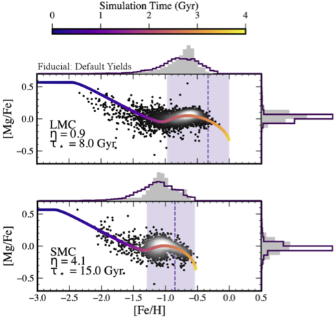

Dwarf-Dwarf Interactions
How do interaction-triggered starbursts impact the chemical evolution of low-mass galaxies?
Interactions between dwarf galaxies should be common, but their impact on low-mass galaxy evolution is not well-understood. The interacting Milky Way satellite pair of the LMC and SMC provides a unique opportunity to quantify the effects of dwarf-dwarf interactions on star formation and subsequent chemical enrichment. Combining deep HST photometry from Scylla with high-precision APOGEE chemical abundances, we modeled the chemical evolution of the MCs, predicting chemical abundance patterns directly from observed star formation histories, and extracting starburst properties directly from chemical abundance patterns of the LMC and SMC. The relative timing and strength of starbursts inferred from chemical abundances in the L/SMC have broader implications for how dynamical interactions trigger star formation in low-mass galaxies.